Ship Tab
Access this tab either by clicking the Ship tab button or by clicking on your ship design in the header
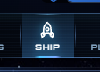
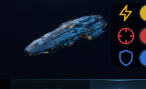
This tab shows information about your ship
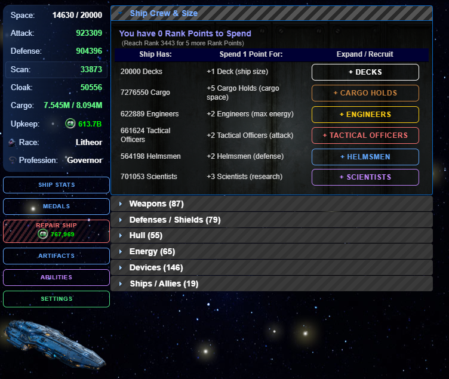
This tab displays the following information:
Your Ship Size (Space) stat
Your Attack stat
Your Defense stat
Your Scan stat
Your Cloak stat
Your Cargo stat
Your Upkeep
Your Race
Your Profession
The Ship Stats button
The Medals button
The Repair Ship button
The Artifacts button
The Abilities button
The Settings button
The ship display
Space Pop-Up
Clicking your Space stat will show your space used vs your ship size, your size class, and any modifiers to your ship size.
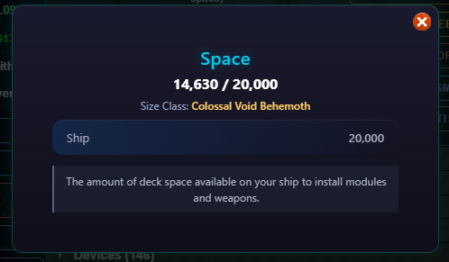
Attack Pop-Up
Clicking your Attack stat will show your total attack, attack from crew, attack from modules, and any modifiers to your attack.
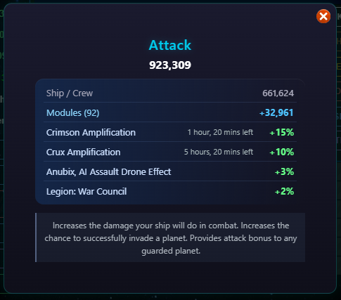
Defense Pop-Up
Clicking your Defense stat will show your total defense, defense from crew, defense from modules, and any modifiers to your defense.
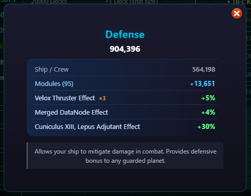
Scan Pop-Up
Clicking your Scan stat will show your total scan, scan from modules, and any modifiers to your scan.
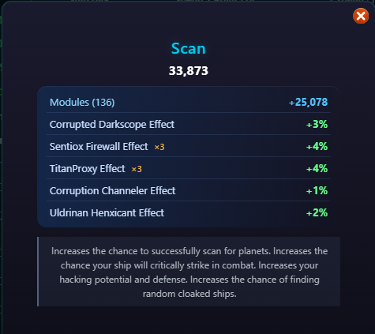
Cloak Pop-Up
Clicking your Cloak stat will show your total cloak, cloak from modules, and any modifiers to your cloak.
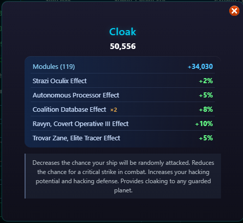
Cargo Pop-Up
Clicking your Cargo stat will show your used cargo space vs max cargo space, cargo space installed on your ship, and any modifiers to your cargo space.
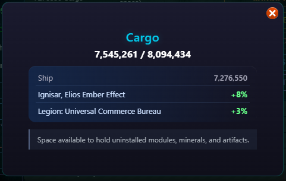
Upkeep Pop-Up
Clicking your Upkeep stat will your total upkeep, time until your upkeep is due, and any modifiers to your upkeep.
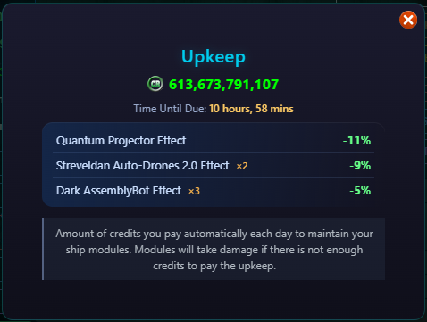
Race Pop-Up
Clicking your Race image will show your current race, its bonus, and its description.
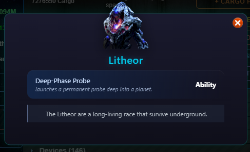
Profession Pop-Up
Clicking your Profession will show your current profession, its bonus, and its description.
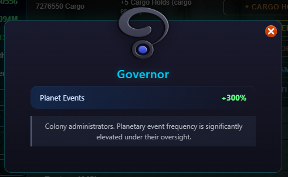
Ship Stats Window
More Information

Medals Window
This window displays your medals and accumulated medal points.

Abilities Window
This window displays your abilities. Here, you can only use abilities that don't require a specific target, like a specific planet or NPC.

Settings Window
This window displays your Player Settings.

Ship Display
You can expand the various sections to see ship crew and size, modules, and allies. In the Ship Crew & Size, you can spend Rank points. In the modules sections, you can install various standard modules, sell modules, use modules abilities, or uninstall / reinstall modules.
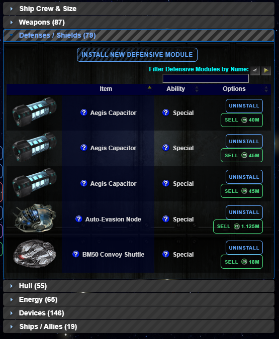